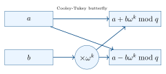

Chapter 4: PQC Implementation¶
4.1 Software Libraries¶
4.1.1 liboqs — Open Quantum Safe¶
liboqs is the primary open-source C library for PQC, developed by the Open Quantum Safe (OQS) project. It provides a unified API for all NIST-standardized algorithms plus many candidates.
#include <oqs/oqs.h>
#include <stdio.h>
#include <stdlib.h>
int main(void) {
OQS_KEM *kem = OQS_KEM_new(OQS_KEM_alg_ml_kem_768);
if (kem == NULL) { fprintf(stderr, "KEM init failed\n"); return 1; }
uint8_t *pk = malloc(kem->length_public_key); /* 1184 bytes */
uint8_t *sk = malloc(kem->length_secret_key); /* 2400 bytes */
uint8_t *ct = malloc(kem->length_ciphertext); /* 1088 bytes */
uint8_t *ss_enc = malloc(kem->length_shared_secret); /* 32 bytes */
uint8_t *ss_dec = malloc(kem->length_shared_secret);
/* Key generation */
OQS_STATUS rc = OQS_KEM_keypair(kem, pk, sk);
if (rc != OQS_SUCCESS) goto cleanup;
/* Encapsulation (sender) */
rc = OQS_KEM_encaps(kem, ct, ss_enc, pk);
if (rc != OQS_SUCCESS) goto cleanup;
/* Decapsulation (receiver) */
rc = OQS_KEM_decaps(kem, ss_dec, ct, sk);
if (rc != OQS_SUCCESS) goto cleanup;
printf("Shared secrets match:
memcmp(ss_enc, ss_dec, kem->length_shared_secret) == 0
? "YES" : "NO");
cleanup:
OQS_KEM_free(kem);
free(pk); free(sk); free(ct); free(ss_enc); free(ss_dec);
return rc == OQS_SUCCESS ? 0 : 1;
}
#include <oqs/oqs.h>
int pqc_sign_verify_example(void) {
OQS_SIG *sig = OQS_SIG_new(OQS_SIG_alg_ml_dsa_65);
uint8_t *pk = malloc(sig->length_public_key); /* 1952 bytes */
uint8_t *sk = malloc(sig->length_secret_key); /* 4000 bytes */
uint8_t *signature = malloc(sig->length_signature); /* <=3309 B */
size_t sig_len;
const uint8_t *message = (uint8_t*)"Hello PQC World!";
size_t msg_len = 16;
OQS_SIG_keypair(sig, pk, sk);
OQS_SIG_sign(sig, signature, &sig_len, message, msg_len, sk);
OQS_STATUS valid = OQS_SIG_verify(sig, message, msg_len,
signature, sig_len, pk);
printf("Signature valid:
valid == OQS_SUCCESS ? "YES" : "NO");
OQS_SIG_free(sig);
free(pk); free(sk); free(signature);
return 0;
}
4.1.2 OQS Provider for OpenSSL¶
The OQS provider integrates PQC into OpenSSL 3.x, enabling PQC in TLS, X.509 certificates, and all OpenSSL-based applications:
# Install OQS Provider
git clone https://github.com/open-quantum-safe/oqs-provider.git
cd oqs-provider
cmake -S . -B build -DOPENSSL_ROOT_DIR=/usr/local/ssl
cmake --build build
sudo cmake --install build
# Configure OpenSSL to load OQS provider
# In openssl.cnf:
# [provider_sect]
# default = default_sect
# oqsprovider = oqsprovider_sect
# [oqsprovider_sect]
# activate = 1
# Generate ML-KEM-768 keypair
openssl genpkey -algorithm ML-KEM-768 -out mlkem768_key.pem
# Generate ML-DSA-65 certificate
openssl req -new -x509 -nodes \
-newkey ML-DSA-65 \
-keyout mldsa65_key.pem \
-out mldsa65_cert.pem \
-subj "/CN=PQC Test CA"
# TLS server with PQC
openssl s_server -cert mldsa65_cert.pem -key mldsa65_key.pem \
-groups mlkem768 -port 4433
# TLS client with PQC
openssl s_client -connect localhost:4433 -groups mlkem768
# List available PQC algorithms
openssl list -kem-algorithms -provider oqsprovider
openssl list -signature-algorithms -provider oqsprovider
4.1.3 PQClean¶
PQClean provides clean, standalone C implementations of NIST-standardized algorithms with no external dependencies — ideal for formal analysis, embedded porting, and reference implementations.
#include "api.h" /* PQCLEAN_MLKEM768_CLEAN_CRYPTO_* constants */
/* All lengths are compile-time constants */
uint8_t pk[PQCLEAN_MLKEM768_CLEAN_CRYPTO_PUBLICKEYBYTES]; /* 1184 */
uint8_t sk[PQCLEAN_MLKEM768_CLEAN_CRYPTO_SECRETKEYBYTES]; /* 2400 */
uint8_t ct[PQCLEAN_MLKEM768_CLEAN_CRYPTO_CIPHERTEXTBYTES]; /* 1088 */
uint8_t ss[PQCLEAN_MLKEM768_CLEAN_CRYPTO_BYTES]; /* 32 */
/* No dynamic allocation -- ideal for embedded systems */
PQCLEAN_MLKEM768_CLEAN_crypto_kem_keypair(pk, sk);
PQCLEAN_MLKEM768_CLEAN_crypto_kem_enc(ct, ss, pk);
4.1.4 Language Ecosystem¶
| Language | Library | Algorithms | License |
|---|---|---|---|
| C | liboqs, PQClean, mlkem-native | All NIST + candidates | MIT/Apache2 |
| C++ | liboqs C++ wrapper | All NIST | MIT |
| Rust | pqcrypto, ml-kem crate | ML-KEM, ML-DSA | MIT/Apache2 |
| Python | liboqs-python | All via CFFI | MIT |
| Java | Bouncy Castle 1.77+ | ML-KEM, ML-DSA, SLH-DSA | MIT |
| JavaScript | liboqs-js (WASM) | ML-KEM, ML-DSA | MIT |
| Go | cloudflare/circl | ML-KEM, X25519MLKEM768 | BSD-3 |
| .NET | Microsoft SymCrypt | ML-KEM, ML-DSA | MIT |
4.1.5 mlkem-native: Formally Verified Implementation¶
mlkem-native is a production-quality, formally verified implementation of ML-KEM with:
-
CBMC formal verification: Memory safety, no undefined behavior, functional correctness.
-
Optimized backends: AARCH64 and x86_64 (AVX2) assembly for critical inner loops.
-
Constant-time: Verified constant-time NTT and arithmetic operations.
-
Integrated: Used in AWS-LC and Microsoft SymCrypt.
4.2 Hardware Acceleration¶
Hardware acceleration is essential for high-throughput and low-latency PQC deployments (TLS servers, HSMs, embedded systems).
4.2.1 NTT Hardware Architecture¶
The Number Theoretic Transform (NTT) is the computational bottleneck of lattice-based PQC. An optimized NTT hardware unit provides \(10\times\)–\(100\times\) speedup over software.

A complete NTT hardware accelerator for ML-KEM (\(n=256\), \(q=3329\)) requires:
-
8 layers of \(n/2=128\) butterfly operations each.
-
Each butterfly: one modular multiplication + two modular additions.
-
Twiddle factor ROM: \(256 \times 12\) bits \(= 384\) bytes.
4.2.2 FPGA Implementation Results¶
| Work | Platform | Variant | LUTs | DSPs | KeyGen | Encaps |
|---|---|---|---|---|---|---|
| Basso et al. | Xilinx UltraScale+ | ML-KEM-768 | 12,500 | 48 | 5.9\(\mu\)s | 6.8\(\mu\)s |
| Roy et al. | Artix-7 (100MHz) | ML-KEM-512 | 7,800 | 32 | 14\(\mu\)s | 16\(\mu\)s |
| Fritzmann et al. | Stratix 10 | ML-KEM-1024 | 18,200 | 64 | 3.2\(\mu\)s | 3.9\(\mu\)s |
4.2.3 ASIC Implementation Results¶
| Technology | Variant | Freq (MHz) | Area (kGE) | KeyGen | Energy/op | |
|---|---|---|---|---|---|---|
| 28nm CMOS | ML-KEM-768 | 400 | 85 | 3.8\(\mu\)s | 1.2 nJ | |
| 45nm CMOS | ML-KEM-512 | 250 | 52 | 7.1\(\mu\)s | 2.8 nJ | |
| 65nm CMOS | ML-KEM-768 | 100 | 38 | 18\(\mu\)s | 9.4 nJ |
4.2.4 GPU Acceleration¶
NVIDIA’s cuPQC library (released January 2025) provides GPU-accelerated PQC:
#include <cupqc.h>
/* Batch ML-KEM key generation on GPU --- 1M ops/sec on H100 */
cupqcMLKEMBatch *batch = cupqcMLKEMBatchCreate(
CUPQC_ML_KEM_768,
1024 /* batch size */
);
/* Generate 1024 keypairs in parallel */
cupqcMLKEMBatchKeyGen(batch, pk_device, sk_device, stream);
/* Encapsulate 1024 ciphertexts in parallel */
cupqcMLKEMBatchEncaps(batch, ct_device, ss_device, pk_device, stream);
cudaStreamSynchronize(stream);
cupqcMLKEMBatchDestroy(batch);
cuPQC achieves approximately 1 million ML-KEM-768 operations per second on an NVIDIA H100 GPU, enabling high-throughput server-side PQC.
4.3 Embedded Systems Implementation¶
4.3.1 pqm4: Cortex-M4 Benchmark¶
pqm4 provides highly optimized assembly implementations for ARM Cortex-M4 processors (used in STM32, Nordic nRF series, etc.).
| Algorithm | KeyGen (kcc) | Encaps (kcc) | Decaps (kcc) | Stack (B) |
|---|---|---|---|---|
| ML-KEM-512 | 488 | 561 | 582 | 7,168 |
| ML-KEM-768 | 764 | 869 | 891 | 9,216 |
| ML-KEM-1024 | 1,107 | 1,248 | 1,276 | 11,264 |
| Algorithm | KeyGen (kcc) | Sign (kcc) | Verify (kcc) | Stack (B) |
|---|---|---|---|---|
| ML-DSA-44 | 1,246 | 2,891 | 1,380 | 27,664 |
| ML-DSA-65 | 1,984 | 4,219 | 2,076 | 39,552 |
| SLH-DSA-SHA2-128f | 8,012 | 78,432 | 15,891 | 14,336 |
| SLH-DSA-SHA2-128s | 8,012 | 2,891,000 | 15,891 | 14,336 |
kcc = kilo clock cycles at 168 MHz (Cortex-M4 max). Divide by 168,000 for milliseconds.
4.3.2 Assembly Optimization Techniques¶
The Cortex-M4’s UMAAL (Unsigned Multiply Accumulate Accumulate Long) instruction is critical for modular arithmetic:
/* Cortex-M4 Montgomery modular multiplication using UMAAL */
/* Computes a*b*R^-1 mod q, where R = 2^32 */
static inline uint32_t montgomery_mul(uint32_t a, uint32_t b,
uint32_t q, uint32_t q_inv) {
uint32_t lo, hi;
uint64_t result;
uint32_t m;
/* Inline assembly using UMAAL for double-precision */
__asm__ volatile (
"umull
"mul
"umlal
: [lo]"=r"(lo), [hi]"=r"(hi), [m]"=r"(m)
: [a]"r"(a), [b]"r"(b), [q]"r"(q), [qi]"r"(q_inv)
);
return hi; /* hi is the Montgomery result */
}
4.3.3 Memory-Constrained Implementations¶
| Implementation | Flash (KB) | RAM (KB) | Stack (KB) | Platform |
|---|---|---|---|---|
| pqm4 (reference) | 12 | 2.4 | 9.2 | ARM Cortex-M4 |
| pqm4 (optimized) | 18 | 2.4 | 9.2 | ARM Cortex-M4 |
| PQClean (clean) | 8 | 2.4 | 15.0 | Generic C |
| On-the-fly NTT | 8 | 0.8 | 11.0 | Ultra-constrained |
4.3.4 On-the-Fly Key Expansion¶
For ultra-constrained devices (RAM \(< 4\)KB), the public matrix \(\mathbf{A}\) can be expanded on-the-fly from its seed rather than stored:
/* Instead of storing A[k][k][256] (requires k*k*256*2 bytes = ~3KB for k=3)
* generate each row on-the-fly during matrix-vector multiplication */
void matvec_onthefly(poly *result, const uint8_t *seed, const poly *vec,
int k, bool transposed) {
for (int i = 0; i < k; i++) {
poly_init(&result[i]);
for (int j = 0; j < k; j++) {
poly a_ij;
/* Generate single polynomial from seed with indices */
gen_poly_from_seed(&a_ij, seed, transposed ? j : i,
transposed ? i : j);
poly_ntt_mul_acc(&result[i], &a_ij, &vec[j]); /* += A_ij * vec_j */
}
}
}
/* Memory savings: ~3KB for k=3 vs storing entire matrix */
4.4 Performance Benchmarks¶
| Operation | ML-KEM-768 | ML-DSA-65 | SLH-DSA-128f | ECDH P-256 |
|---|---|---|---|---|
| KeyGen (\(\mu\)s) | 37 | 111 | 15 | 47 |
| Encaps/Sign (\(\mu\)s) | 46 | 111 | 26 | 54 |
| Decaps/Verify (\(\mu\)s) | 50 | 65 | 8 | 47 |
| pk size (bytes) | 1184 | 1952 | 32 | 64 |
| sk size (bytes) | 2400 | 4000 | 64 | 32 |
| ct/sig size (bytes) | 1088 | 3309 | 17088 | 64 |
4.5 TLS Integration¶
# Server: ML-DSA-65 certificate + ML-KEM-768 key exchange
openssl s_server \
-cert mldsa65.crt -key mldsa65.key \
-accept 8443 \
-tls1_3 \
-curves mlkem768:x25519 \ # Prefer ML-KEM-768, fallback X25519
-provider oqsprovider -provider default
# Client verification
openssl s_client \
-connect localhost:8443 \
-tls1_3 \
-curves mlkem768 \
-provider oqsprovider -provider default \
-verify_return_error
# X25519MLKEM768 hybrid (recommended during transition)
openssl s_client -connect pq.example.com:443 \
-curves X25519MLKEM768 \
-provider oqsprovider -provider default
4.6 Summary¶
-
liboqs provides a comprehensive unified API for all NIST PQC algorithms in C.
-
OQS Provider integrates PQC into OpenSSL 3.x for TLS, X.509, and all OpenSSL-based applications.
-
mlkem-native offers formally verified, production-quality ML-KEM with assembly optimizations.
-
NTT acceleration (FPGA/ASIC) achieves \(<\)10\(\mu\)s per ML-KEM operation; GPU achieves 1M ops/sec.
-
pqm4 provides optimized Cortex-M4 implementations; ML-KEM-768 KeyGen requires \(\sim\)764 kcc.
-
On-the-fly key expansion significantly reduces RAM usage for ultra-constrained IoT devices.
-
Bouncy Castle (Java), Rust crates, and Go’s cloudflare/circl provide idiomatic PQC across languages.